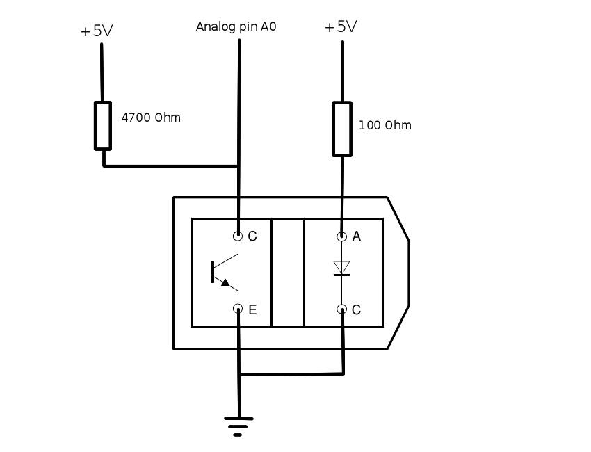
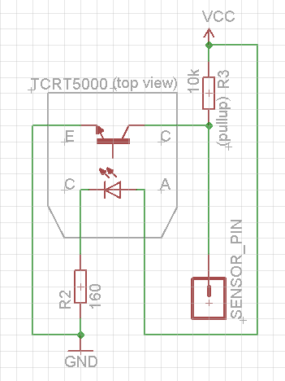

Got a bag of 10 for 2 USD on eBay... use it as a touch sensor or heart beat measuring tool !
TCRT5000 as a (no) touch sensor

Great, just found out I rediscovered the wheel ... anyway. You can use the schema without an ADC pin : with a 160ohm current limiter diode, if you're close enough of the led (1-2 cm distance) if shorts the pin to ground and you just read a 0v (well less than 1.5v makes 0 in TTL5v).
TCRT5000 as a heart beat measuring tool